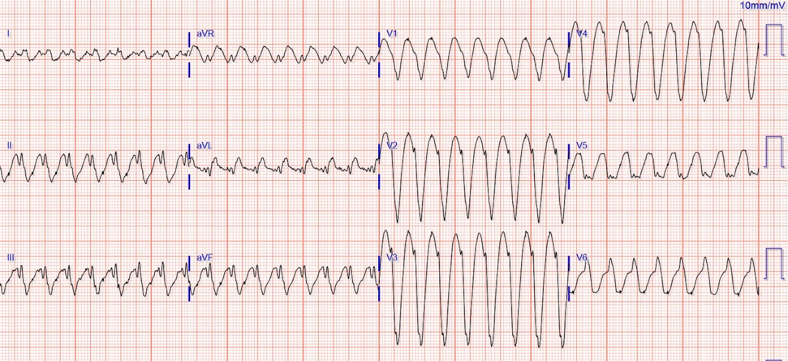
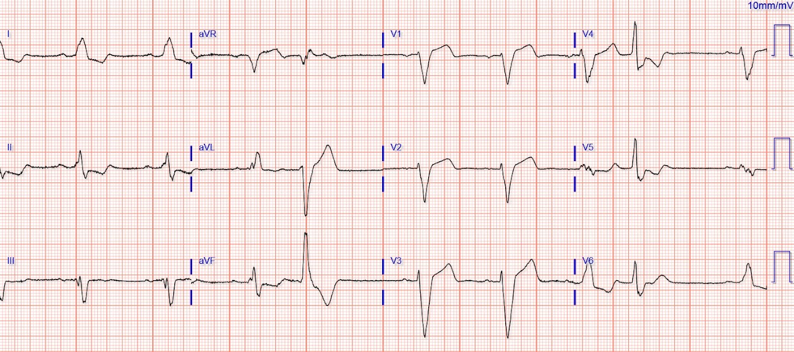
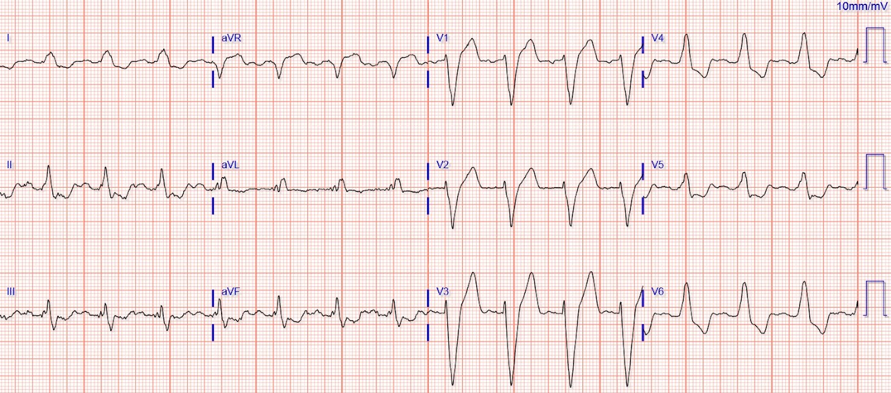
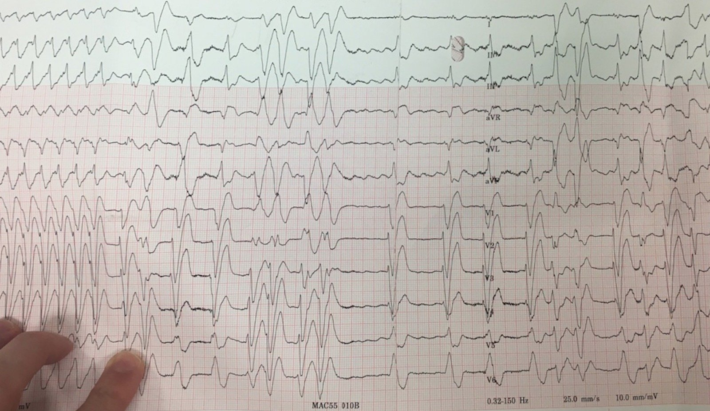
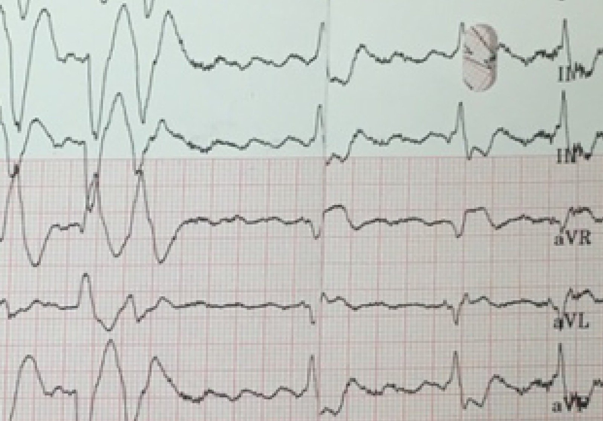
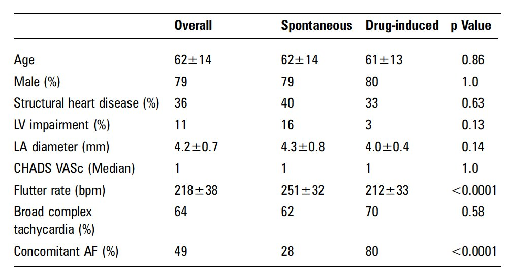
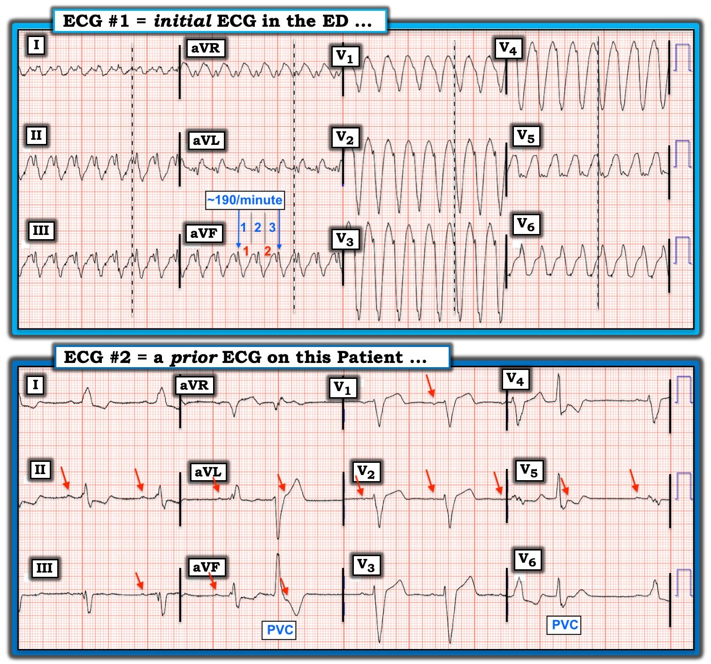
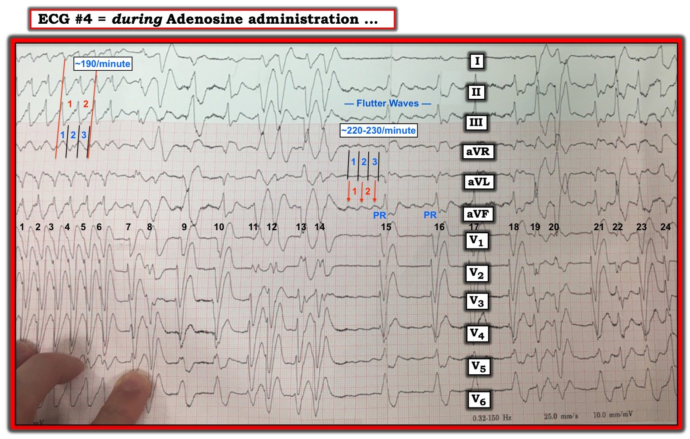

23/12/2019 — Nhịp nhanh QRS rộng không tuân theo quy tắc
Bản dịch tiếng Việt của bài "Wide-complex tachycardia that didn’t follow the rules" – Dr. Smith’s ECG Blog. Giữ nguyên toàn bộ 10 hình ảnh của bản gốc.
Ca bệnh do Brooks Walsh, bác sĩ cấp cứu và người say mê điện tâm đồ ở Connecticut, đóng góp (kèm vài bình luận của Smith)
Một
bệnh nhân trung niên đến khoa cấp cứu (ED) vì hồi hộp đánh trống ngực,
khó thở, vã mồ hôi và cảm giác đè nặng ngực lan ra hai tay. Bệnh nhân có
tiền sử bệnh cơ tim không do thiếu máu cục bộ (EF 30%), và đã được PCI đặt một
stent. Thuốc dùng tại nhà gồm metoprolol, nhưng không có thuốc chẹn kênh calci hay thuốc chẹn kênh natri.
Điện tâm đồ đầu tiên tại khoa cấp cứu:


Khả năng áp đảo là đây là
nhịp nhanh thất (VT), ngay cả khi chỉ xét đến tuổi và tiền sử bệnh. Nếu áp dụng các tiêu chuẩn chính thức để phân biệt VT với SVT, thì VT càng có vẻ nhiều khả năng hơn. Ví dụ:
- Khoảng RS ở V1 và V2 trên 100 ms (thuật toán Brugada)
- Có sóng R khởi đầu
ở aVR (thuật toán Vereckei 1 và thuật toán Vereckei 2)
Cuối cùng, tổng thời gian QRS ở V1, V2 rất dài, tới 200 ms, dài hơn LBBB điển hình và một lần nữa gợi ý VT.
Đã kiểm tra lại một điện tâm đồ cũ:


Một mặt, QRS ở aVR trên điện tâm đồ nền khác biệt rõ rệt so với QRS trên điện tâm đồ lúc nhịp nhanh, một lần nữa ủng hộ giả định VT.
Tuy nhiên, độ rộng của cả phức bộ QRS lẫn khoảng RS đều tương tự nhau trên điện tâm đồ cũ và lúc nhịp nhanh. Điều này làm tăng khả năng nhịp nhanh QRS rộng là một SVT kèm LBBB cố định.
Vì có phần nghi ngờ về nguồn gốc thất của WCT,
bác sĩ cấp cứu quyết định thử adenosine trước. Một liều 12 mg đã được tiêm đúng cách, và không ghi nhận thay đổi nào trên monitor (vào lúc đó). Sau đó
bệnh nhân được sốc điện chuyển nhịp.


WCT được cho là VT, và bệnh nhân được nhập viện.
Một manh mối bất ngờ!
Mặc dù bác sĩ cấp cứu (cùng với một điều dưỡng thực hành nâng cao (APRN) và một điều dưỡng (RN)) không thấy bất kỳ thay đổi nào của nhịp sau khi bơm adenosine, về sau người ta đã tìm ra một bản ghi trên giấy của đợt này.


WCT bị ngắt quãng bởi một loạt phức bộ QRS có hình thái thay đổi,
với các sóng cuồng nhĩ được ghi nhận ở II, III và aVF.


Tần số của sóng cuồng nhĩ trùng với tần số của WCT (khoảng 200/phút), chứng minh rằng WCT lúc nhập viện là cuồng nhĩ dẫn truyền 1:1.
Thăm dò điện sinh lý (EP) sau đó không gây ra được VT, chỉ gây ra được rung nhĩ. Bệnh nhân đã được triệt đốt để phòng cuồng nhĩ tái phát.
Điều này cho thấy, ngay cả khi adenosine không chuyển được nhịp, nó vẫn có thể hữu ích trong chẩn đoán nhịp.
Cuồng nhĩ 1:1 tự phát
Cuồng nhĩ thường có tần số 300 F/phút. Tuy nhiên, nút AV không thể dẫn truyền ở tần số đó, và thường chỉ cho phép dẫn truyền 2:1, tạo ra tần số thất thường gặp là 150 nhịp/phút.
Cuồng nhĩ dẫn truyền 1:1 có thể gặp trong một số bối cảnh nhất định. Ví dụ, ở bệnh nhân dùng flecainide điều trị rung nhĩ, nhưng không dùng thuốc chẹn beta. Cuồng nhĩ dẫn truyền 1:1 tự phát (tức là khi không dùng thuốc chống loạn nhịp) rất hiếm, chỉ có một số ít báo cáo ca trong y văn: Tan, Burkhart, Murthy là 3 báo cáo truy cập mở tương đối gần đây, còn Nathwani là một bản tóm tắt mô tả một số lượng không rõ đối tượng có cuồng nhĩ 1:1 tự phát cùng với những người có cuồng nhĩ 1:1 liên quan đến thuốc chống loạn nhịp.
Không hoàn toàn rõ vì sao bệnh nhân của chúng tôi lại xuất hiện dẫn truyền 1:1 trong cuồng nhĩ. Một số bệnh lý (cường giáp, đường phụ, tăng vọt catecholamine) có thể gây ra hiện tượng này. Gắng sức có thể chuyển cuồng nhĩ từ dẫn truyền 2:1 sang 1:1, dường như do sự phối hợp giữa dẫn truyền AV được gia tốc và dẫn truyền cuồng nhĩ bị chậm lại.
Ở
bệnh nhân của chúng tôi, tần số cuồng nhĩ 200 là khá chậm, tạo điều kiện cho dẫn truyền 1:1
qua nút AV. Tuy nhiên, tần số cuồng nhĩ chậm không phải lúc nào cũng
đi kèm cuồng nhĩ 1:1 tự phát. Murthy, chẳng hạn, đã mô tả một người đàn ông 50 tuổi khỏe mạnh đến viện với cuồng nhĩ 1:1 tự phát ở tần số 280 nhịp/phút.
Ngoài ra, nghiên cứu duy nhất so sánh cuồng nhĩ 1:1 tự phát với cuồng nhĩ 1:1 liên quan đến thuốc chống loạn nhịp cho thấy cuồng nhĩ nhanh hơn ở các ca tự phát.
Hợp lý khi tần số cuồng nhĩ nhanh hơn ở các ca tự phát, vì không có thuốc nào làm chậm tần số nhĩ, nhưng có vẻ rất bất thường khi nút AV có thể dẫn truyền ở tần số nhanh như vậy mà không có một bệnh lý nào khác (chẳng hạn cường giáp).


Kết luận
Rất đáng ghi nhớ rằng đây là một ca hiếm gặp!
Ở phần lớn bệnh nhân trung niên có tiền sử bệnh cơ tim, một WCT thường sẽ là VT. Hơn nữa, dù các tiêu chuẩn cụ thể (ví dụ khoảng RS ở chuyển đạo trước tim, hình thái ở aVR) có thể không nhạy hoàn hảo, chúng vẫn có nhiều khả năng hữu ích hơn so với việc nghi ngờ cuồng nhĩ 1:1 ở bệnh nhân không dùng thuốc chống loạn nhịp chẹn kênh natri.
So sánh điện tâm đồ cũ với điện tâm đồ lúc WCT có thể đã gợi ý SVT hoặc cuồng nhĩ vào thời điểm nhập viện. Tuy nhiên, với đa số bác sĩ lâm sàng, sẽ là không thận trọng nếu thử, ví dụ, một thuốc chẹn kênh calci làm thuốc đầu tiên. Khi không hoàn toàn chắc chắn, hãy điều trị như VT!
Adenosine an toàn trong VT và có thể hữu ích trong việc chẩn đoán.

===================================
BÌNH LUẬN CỦA TÔI, bởi KEN GRAUER, MD (23/12/2019):
===================================
Luôn TUYỆT VỜI khi được chào đón những đóng góp cho Dr. Smith’s ECG Blog từ Dr. Brooks Walsh — một bác sĩ lâm sàng rất giỏi + người bạn và đồng nghiệp tốt, người luôn khơi gợi thảo luận về những chủ đề quan trọng của y học cấp cứu. Ca bệnh hôm nay của Brooks cũng không ngoại lệ.
- Tôi đồng ý với nhiều điểm lâm sàng XUẤT SẮC mà Brooks đã nhấn mạnh.
- Dù vậy — tôi có quan điểm khác về một số khía cạnh của ca này.
- Câu trả lời dứt khoát có thể khó tìm — nhưng tôi hy vọng bổ sung cho phần trình bày của Brooks những Điểm cần học quan trọng cho tất cả mọi người.
- ĐIỀU CỐT LÕI — Tôi không nghĩ ( = quan điểm của tôi) rằng nhịp QRS rộng này đã không “tuân theo quy tắc”. Ngược lại — tôi nghĩ nó tuân theo quy tắc rất đẹp!
- Để rõ ràng, trong Hình 1 — tôi đã ghép và đánh nhãn điện tâm đồ #1 ( = là điện tâm đồ đầu tiên trong ca này, được ghi tại khoa cấp cứu) — cùng với điện tâm đồ #2 (là điện tâm đồ trước đó tìm được của bệnh nhân này).


Tôi hoàn toàn đồng ý với Brooks rằng điện tâm đồ #1 cho thấy nhịp WCT ( = Wide-Complex Tachycardia — nhịp nhanh QRS rộng) đều, không có bằng chứng rõ ràng về hoạt động nhĩ. Dù tôi đồng ý với Brooks rằng tần số là “khoảng 200/phút” — tôi thấy điều quan trọng là phải ước tính tần số chính xác hơn. Điều này RẤT DỄ làm — bằng phương pháp Cách-Một-Nhát (Every-Other-Beat Method) (BẤM VÀO ĐÂY — và nghe vài phút tiếp theo trong ECG Video của tôi để được giải thích về Phương pháp dễ áp dụng này).
- Theo phương pháp Cách-Một-Nhát — có thể thấy ở chuyển đạo aVF của điện tâm đồ #1 rằng cần chỉ nhỉnh hơn 3 ô lớn trên giấy kẻ ô điện tâm đồ (các số màu XANH) — để ghi được 2 nhát của cơn nhịp nhanh (các số màu ĐỎ). Do đó — MỘT NỬA tần số là chỉ dưới 100 nhịp/phút một chút, X 2 = ~190 nhịp/phút là tần số của WCT trên điện tâm đồ #1.
Tôi cũng hoàn toàn đồng ý với Brooks rằng xác suất áp đảo đối với nhịp WCT không có bằng chứng rõ ràng về hoạt động nhĩ này nghiêng về VT là chẩn đoán cho đến khi chứng minh được điều ngược lại! Xác suất thống kê (do bệnh nhân này ít nhất cũng ở tuổi trung niên, có bệnh tim cấu trúc nền dưới dạng một bệnh cơ tim nặng) rằng nhịp này là VT là >90% ngay cả trước khi bạn nhìn vào điện tâm đồ! Dù vậy — tôi không đồng ý với các dấu hiệu điện tâm đồ được chọn làm bằng chứng “ủng hộ”.
- Sau hơn 3+ thập kỷ xem xét tất cả các tiêu chuẩn điện tâm đồ dự báo mà tôi từng “có được trong tay” để phân biệt VT với dẫn truyền lệch hướng — tôi đã hình thành “Quan điểm của riêng tôi” về chủ đề này. Điều này phản ánh kinh nghiệm và quan điểm của tôi — mà tôi hoàn toàn hiểu rằng người khác có thể không đồng ý! (BẤM VÀO ĐÂY — để xem “Quan điểm của tôi” về phân biệt VT với SVT trong chẩn đoán nhịp WCT đều).
- ĐIỂM THEN CHỐT (PEARL) #1 — Hãy cân nhắc dựa ít hơn vào các tiêu chuẩn điện tâm đồ dựa trên các phép đo chặt chẽ — dù là đo thời gian QRS, khoảng từ R đến đáy S (R-to-S nadir), hay thời gian các khoảng khác. Lý do là ranh giới của điểm khởi đầu QRS, đáy sóng S (điểm thấp nhất của sóng S), và sự phân biệt giữa điểm kết thúc QRS với điểm bắt đầu sóng ST-T không phải lúc nào cũng rõ ràng. Việc các bác sĩ tim mạch chuyên gia ngồi trong một văn phòng yên tĩnh hồi cứu một loạt bản ghi nghiên cứu để tìm các số đo “buộc tội” là một chuyện — và, việc đứng bên giường một bệnh nhân đang suy sụp nhanh trong một rối loạn nhịp nhanh đe dọa tính mạng, khi tốc độ của mọi thứ xung quanh đơn giản là không thuận lợi cho việc ra quyết định dựa trên các phép đo chính xác, lại là chuyện khác. Theo kinh nghiệm của tôi — tôi chưa bao giờ đo được khoảng từ R đến đáy S, hay các đoạn QRS đủ chính xác để giúp ích trong tình huống cấp cứu khi đứng bên giường một bệnh nhân đang “suy sụp”.
- ĐIỂM THEN CHỐT (PEARL) #2 — Đúng là một mức chậm trễ nào đó của phần khởi đầu của phức bộ QRS (điều mà tôi dựa vào hình dạng hơn là đo đạc chặt chẽ) có nhiều khả năng gặp ở VT hơn là ở các nhịp trên thất. Nhưng thông tin này tốt nhất nên được dùng (theo quan điểm của tôi) như một tiêu chuẩn tương đối — hơn là một tiêu chuẩn chính xác. Ví dụ — sườn xuống ban đầu của sóng S ở các chuyển đạo trước của điện tâm đồ #1 rõ ràng biểu hiện một mức chậm trễ (sườn xuống của sóng S ở các chuyển đạo V1 đến V3 trên điện tâm đồ #1 không phải là một đường thẳng đứng dốc). Thấy vậy — tôi nghĩ sự chậm trễ nhẹ mà tôi thấy ở khoảng từ R đến đáy S có thể phù hợp với VT — nhưng chắc chắn không có giá trị chẩn đoán vì CẢNH BÁO mà tôi mô tả ở gạch đầu dòng tiếp theo!
- CẢNH BÁO — Mọi phỏng đoán đều mất giá trị đối với dấu hiệu chậm trễ QRS khởi đầu và QRS giãn rộng rõ rệt NẾU bệnh nhân có bệnh tim cấu trúc nền nặng — vì hình thái QRS nền có thể khá không điển hình khi bệnh nhân có bệnh tim đáng kể. Ví dụ — hãy lưu ý tình trạng phân mảnh (khía) quá mức của phức bộ QRS ở nhiều chuyển đạo trên điện tâm đồ #2 (đặc biệt ở các chuyển đạo II, III, aVL, aVF và V5). Phân mảnh gợi ý có sẹo (tức là do nhồi máu cơ tim cũ và/hoặc bệnh cơ tim). Do đó, có thể thấy từ bản ghi nền trước đó ( = điện tâm đồ #2) của bệnh nhân này — rằng ông ấy đang ở nhịp xoang kèm LBBB hoàn toàn. Do bệnh cơ tim nền nặng — phức bộ QRS nền của ông ấy cực kỳ rộng (đạt ~0,20 giây ở các nhát dẫn truyền từ xoang tại chuyển đạo V3 của điện tâm đồ #2). Ngoài ra, có phân mảnh rõ rệt trên điện tâm đồ #2 — và điều đó có thể góp phần làm chậm thời gian từ R đến đáy S.
- ĐIỂM THEN CHỐT (PEARL) #3 — NẾU bạn có thể chắc chắn về điểm khởi đầu và điểm kết thúc của phức bộ QRS ở chuyển đạo aVR trong một nhịp WCT đều — thì dấu hiệu sóng R đơn pha dương hoàn toàn ở chuyển đạo aVR gần như chẩn đoán VT. Lý do là, để phức bộ QRS dương hoàn toàn ở chuyển đạo aVR — xung điện phải xuất phát từ mỏm tim — và xung xuất phát từ mỏm gần như bảo đảm nguồn gốc thất. Theo kinh nghiệm của tôi — tôi không thấy các hình thái QRS khác ở chuyển đạo aVR là hữu ích. Các đường CHẤM đen-trắng trên điện tâm đồ #1 thể hiện nỗ lực tốt nhất của tôi để đánh dấu điểm khởi đầu của phức bộ QRS ở cả 12 chuyển đạo trong bản ghi này. Tôi nghĩ (phải thừa nhận là khó chắc chắn) rằng có một sóng lệch âm ban đầu rất nhỏ trước sóng lệch dương ở chuyển đạo aVR của điện tâm đồ #1. (Việc rất khó xác định hướng của sóng lệch ban đầu ở chuyển đạo aVR của điện tâm đồ #1 minh họa lý do tôi bỏ qua mọi thứ trừ một QRS dương hoàn toàn ở chuyển đạo aVR).
Đánh giá ban đầu của tôi về điện tâm đồ #1: Tôi thấy một WCT đều ở ~190/phút không có dấu hiệu rõ ràng của hoạt động nhĩ. Việc bệnh nhân này ở tuổi trung niên và có bệnh cơ tim nặng đã biết có nghĩa là về mặt thống kê có khả năng >90% nhịp WCT đều này là VT. Hình thái QRS trên điện tâm đồ #1 có hơi không điển hình cho LBBB (tất cả những khía đó + chậm trễ nhẹ ở sườn xuống của sóng S vùng trước) — nhưng xét đến bệnh cơ tim + một hình thái QRS có thể phù hợp với LBBB (sóng R dương ở các chuyển đạo bên I và V6 — và QRS chủ yếu hướng xuống ở các chuyển đạo trước) — tôi không thể loại trừ khả năng một nhịp SVT.
- Điều trị ban đầu bằng Adenosine là hoàn toàn phù hợp. Adenosine khó có khả năng giúp ích với VT do thiếu máu cục bộ — nhưng, vì hình thái QRS trên điện tâm đồ #1 có thể phù hợp với một nhịp SVT (kèm hoặc LBBB nền hoặc dẫn truyền lệch hướng dạng LBBB) — một “thử nghiệm điều trị” bằng Adenosine chính là điều tôi sẽ thử trong tình huống này. Thời gian bán thải cực ngắn của Adenosine khiến nguy cơ tác dụng bất lợi kéo dài là thấp — và thuốc này có thể chuyển nhịp nếu căn nguyên là SVT.
- Nếu Adenosine không hiệu quả (như trong ca này) — thì sốc điện chuyển nhịp đồng bộ trở thành điều trị được lựa chọn.
- ĐIỂM THEN CHỐT (PEARL) #4 — Nhân viên y tế cấp cứu thường nghĩ chỉ có 2 câu trả lời khả dĩ cho căn nguyên của một nhịp WCT đều = hoặc chắc chắn là VT hoặc chắc chắn là SVT (trong đó lý do QRS giãn rộng hoặc là BBB có từ trước hoặc là dẫn truyền lệch hướng liên quan tần số). Hãy nhớ rằng còn có một câu trả lời khả dĩ thứ 3 = đó là, chúng ta có thể không chắc chắn về căn nguyên của WCT vào thời điểm này. Trong ca này — tôi thiên về một ước tính xác suất tương đối chủ quan, dựa trên phỏng đoán có cơ sở tốt nhất của tôi. Tôi đã đưa ra khả năng ~90% rằng điện tâm đồ #1 là VT — nhưng 90% không phải là 100%, và chúng ta cần luôn cởi mở với các khả năng khác.
- ĐIỂM THEN CHỐT (PEARL) #5 — Không cần trì hoãn điều trị một WCT đều chỉ vì chúng ta chưa chắc chắn 100% về chẩn đoán. Ngược lại — trong nhiều trường hợp (nếu không nói là phần lớn), chúng ta bắt đầu điều trị rối loạn nhịp của một WCT trước khi biết chắc chắn 100% đó là nhịp gì. Cả Adenosine lẫn sốc điện chuyển nhịp đồng bộ đều là những điều trị ban đầu phù hợp trong ca này!
Tiếp theo, chúng tôi được cho xem điện tâm đồ #2: Tôi cho rằng hình ảnh bản ghi nền của bệnh nhân này đã làm giảm khả năng WCT đều trên điện tâm đồ #1 là VT.
- Như đã nêu ở trên — điện tâm đồ #2 xác nhận bệnh nhân này có QRS rộng nền do LBBB hoàn toàn + phân mảnh ở nhiều chuyển đạo.
- Chuyển đạo V1 và V2 trên bản ghi nền trước đây đã cho thấy chậm trễ ở sườn xuống của sóng S ở bệnh nhân LBBB này — vì vậy đây không phải là một “dấu hiệu mới” do nhịp nhanh QRS rộng gây ra.
- Ngoài ra — tôi “bị ấn tượng” bởi sóng lệch ban đầu của QRS ở các chuyển đạo II, III, aVL và aVF — mà theo mắt tôi có sự giống nhau rõ ràng với sóng lệch ban đầu ở các chuyển đạo này trong lúc WCT trên điện tâm đồ #1. Đặc biệt ở chuyển đạo III và aVF — sự giống nhau này nhiều hơn mức tôi có thể quy cho ngẫu nhiên.
- ĐIỀU CỐT LÕI — Sau khi xem điện tâm đồ #2, tôi đã hạ ước tính của mình rằng nhịp trên điện tâm đồ #1 là VT xuống còn ~70-80%. Đây vẫn là VT với khả năng cao hơn là không — nhưng giờ tôi kém chắc chắn hơn so với trước khi xem bản ghi nền của bệnh nhân này. Dù vậy, về mặt lâm sàng đã đến lúc phải điều trị bệnh nhân này — và một chẩn đoán nhịp xác định là không thiết yếu cho các biện pháp điều trị ban đầu!
Việc WCT đều trên điện tâm đồ #1 không phải là VT sau đó đã được xác lập — vì thăm dò điện sinh lý (EP) đã không gây ra được VT tại phòng thăm dò. Chỉ có AFib được gây ra trong lúc thăm dò EP.
- Dù vậy — tôi không đồng ý rằng dải nhịp ghi được trong lúc tiêm Adenosine (mà tôi trình bày ở Hình 2) chứng minh nhịp trên điện tâm đồ #1 là cuồng nhĩ (AFlutter) 1:1.


Các lý do khiến tôi không cho rằng điện tâm đồ #4 ( = dải nhịp trình bày ở Hình 2) chứng minh nhịp trên điện tâm đồ #1 là AFlutter 1:1 gồm:
- Như đã bàn trước đó — tần số của nhịp WCT đều là ~190/phút. Tần số này thật sự khác với tần số sóng cuồng nhĩ trên điện tâm đồ #4. Theo phương pháp Cách-Một-Nhát — 2 sóng cuồng nhĩ (các số màu ĐỎ ở vùng giữa điện tâm đồ #4) được ghi trong khoảng thời gian ngắn hơn 3 ô lớn trên giấy kẻ ô điện tâm đồ (các số màu XANH LAM ở vùng giữa này của điện tâm đồ #4). Do đó — MỘT NỬA tần số sóng cuồng nhĩ là ~110-115/phút — nghĩa là tần số cuồng nhĩ trên điện tâm đồ #4 là ~220-230/phút, tức nhanh hơn đáng kể so với tần số của WCT đều.
- Mặc dù khó nhìn thấy trên điện tâm đồ #4 vì có quá nhiều nhát ngoại tâm thu thất (các nhát #7 đến #14 đều biểu hiện hình thái QRS khác với hình thái thấy ở các nhát #1 đến #6 trong lúc WCT đều) — tôi không thấy sóng cuồng nhĩ trên điện tâm đồ #4 trước nhát #14. Vì vậy, thay vì Adenosine “bộc lộ” cuồng nhĩ nền vốn đang dẫn truyền 1:1 trong lúc WCT đều — chẳng phải có thể (nếu không nói là nhiều khả năng hơn) rằng AFlutter mới khởi phát sau khi tiêm Adenosine có thể đã do chính Adenosine gây ra? (nhất là khi tần số sóng cuồng nhĩ trên điện tâm đồ #4 nhanh hơn tần số của WCT đều ít nhất 30 nhát/phút)?
- ĐIỂM THEN CHỐT (PEARL) #6 — Điều quan trọng là phải biết các tác dụng phụ của Adenosine. Chúng bao gồm không chỉ việc gây nhịp chậm đáng kể (dù thường chỉ thoáng qua) — mà còn gây cả rối loạn nhịp nhanh thất lẫn trên thất. Vì thế, Adenosine đã được chứng minh là gây ra cả AFib lẫn AFlutter — có lẽ do tác dụng của thuốc này làm rút ngắn điện thế hoạt động của nhĩ, từ đó làm giảm thời kỳ trơ hiệu quả ở mô nhĩ (Mallet ML: Proarrhythmic Effects of Adenosine — Emerg Med J 21:408-410, 2004).
- Dù vậy — việc hình thái QRS của các nhát #15 và 16 trên điện tâm đồ #4 (trong giai đoạn chắc chắn là AFlutter) rất giống (trừ các sóng cuồng nhĩ chồng lên) ở hầu hết các chuyển đạo với hình thái QRS của các nhát #1 đến #6 (trong lúc WCT đều) — ủng hộ mạnh mẽ rằng hình thái QRS này có nguồn gốc trên thất — nhất là khi khoảng PR (hay đúng hơn là khoảng flutter-R) trong lúc AFlutter có vẻ hằng định (chữ “PR” màu XANH LAM trên điện tâm đồ #4) — do đó gợi ý rằng các sóng cuồng nhĩ có được dẫn truyền. (Giá có thời gian theo dõi dài hơn thì sẽ hữu ích, để chắc chắn hơn về các nhận xét trên … ).
SUY NGHĨ CUỐI CÙNG: Chúng tôi chân thành CẢM ƠN Dr. Brooks Walsh đã trình bày ca bệnh hấp dẫn này! Ca này nhấn mạnh một loạt khái niệm MẤU CHỐT trong chẩn đoán và xử trí rối loạn nhịp cấp cứu. Mặc dù về mặt thống kê — VT là chẩn đoán có khả năng nhất cho nhịp trên điện tâm đồ #1 — căn nguyên trên thất không bao giờ có thể bị loại trừ. Theo ý kiến của tôi, các “quy tắc” đã được tuân thủ — vì đơn giản là không bao giờ có thể chắc chắn về căn nguyên của nhịp cho đến sau này, khi thăm dò EP. Về mặt lâm sàng, điều này không quan trọng — vì điều trị ban đầu phù hợp (trong ca này là Adenosine, sau đó là sốc điện chuyển nhịp đồng bộ) là NHƯ NHAU bất kể căn nguyên của WCT đều rốt cuộc là gì.
- Mặc dù Adenosine không chuyển được nhịp WCT đều — nó đã ủng hộ nghi ngờ của chúng tôi rằng WCT là SVT, vì hình thái QRS trong các nhát được dẫn truyền từ cuồng nhĩ hầu như giống hệt hình thái QRS trong lúc WCT.
- Việc có sẵn bản ghi trước đó (bản ghi nền) — và bản ghi sau chuyển nhịp càng ủng hộ thêm căn nguyên trên thất khi cho thấy hình thái QRS khá giống (dù không hoàn toàn giống hệt) với hình thái QRS trong lúc nhịp nhanh.
- Cần thăm dò EP để xác nhận chẩn đoán cuối cùng.